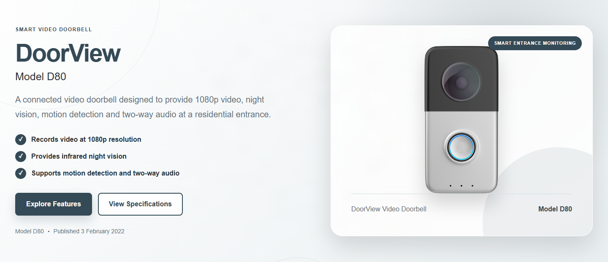

1080p video
The integrated camera captures video at 1920 × 1080 pixels to provide a clear view of visitors and activity near the entrance.

Credentials applied with: Adobe Content Authenticity
Asset type: PNG image with embedded Content Credentials
Credential location: Embedded in the asset file
Last verification: Passed on 19/11/2026 using Content Credentials Verify
Verify Content CredentialsCredentials applied with: Adobe Content Authenticity
Asset type: PNG image with embedded Content Credentials
Credential location: Embedded in the asset file
Last verification: Passed on 19/11/2026 using Content Credentials Verify
Verify Content CredentialsEntrance monitoring at a glance
CobaltReach DoorView D80 is a connected video doorbell designed to provide live video and visitor communication at a residential entrance.
The integrated camera captures 1080p video through a 145-degree diagonal field of view and uses infrared illumination to provide monochrome night vision in low-light conditions.
DoorView D80 includes adjustable motion detection, two-way audio, mobile notifications and selectable motion zones for routine entrance monitoring.
Product highlights
DoorView D80 combines clear video, low-light visibility, motion alerts and visitor communication in a compact outdoor doorbell.
The integrated camera captures video at 1920 × 1080 pixels to provide a clear view of visitors and activity near the entrance.
Infrared illumination supports monochrome video monitoring when surrounding light is insufficient for normal colour video.
The adjustable motion sensor can detect movement at distances of up to 8 metres under suitable installation conditions.
The built-in microphone and speaker allow users to hear and speak with visitors through the connected mobile application.
Configurable detection zones allow users to reduce monitoring of roads, pavements, trees and other unwanted activity areas.

Designed for home entrances
Install DoorView D80 beside the entrance at the recommended height, connect it to a compatible power source and complete wireless setup through the mobile application.
The mounting plate provides a stable attachment point and supports alignment of the camera toward the visitor approach.
Users can select a motion range and define activity zones according to the entrance layout and nearby movement.
The connected application provides live video, motion notifications and two-way communication when network access is available.
Motion-detection range
DoorView D80 can detect movement at distances of up to 8 metres under suitable conditions, although mounting height, viewing angle, temperature, obstacles and sensitivity settings may affect the practical detection range.
Product details
Key product information for the CobaltReach DoorView D80 smart video doorbell.

| Product name | DoorView |
|---|---|
| Model | D80 |
| Product category | Smart video doorbell |
| Video resolution | 1920 × 1080 pixels |
| Field of view | 145° diagonal |
| Night vision | Infrared monochrome video |
| Motion range | Adjustable up to 8 m |
| Audio | Two-way microphone and speaker |
| Wireless connection | 2.4 GHz Wi-Fi |
| Power input | 12–24 V AC wired supply |
| Operating temperature | -20°C to 45°C |
| Product dimensions | 135 × 47 × 27 mm |
| Product code | CR-D80-2026 |
Getting started
Complete the following steps during installation and normal operation.
Select a suitable mounting position with a clear view of the entrance and access to a compatible wired power supply.
Secure the mounting plate, connect the power wires and attach the doorbell body according to the installation instructions.
Use the mobile application to connect DoorView D80 to a compatible 2.4 GHz Wi-Fi network.
Select the preferred sensitivity, motion range and activity zones before testing notifications from the visitor approach.
Important information
Follow these precautions when installing, cleaning or storing DoorView D80.
Disconnect the device, clean and dry its exterior, and store it in a cool and dry indoor location protected from moisture, dust, direct sunlight and physical damage.
Questions and Answers
Find answers about DoorView D80, including motion-detection range, video resolution, night vision, two-way audio and wireless setup.
DoorView D80 has an adjustable motion-detection range of up to 8 metres under suitable installation and environmental conditions.
DoorView D80 captures video at 1920 × 1080 pixels, which is commonly described as 1080p resolution.
Yes, infrared illumination provides monochrome night vision when surrounding light is insufficient for normal colour video.
Yes, the integrated microphone and speaker support two-way audio through the connected mobile application.
DoorView D80 connects to a compatible 2.4 GHz Wi-Fi network and does not connect directly to a 5 GHz-only network.
DoorView D80 is manufactured and distributed by CobaltReach.